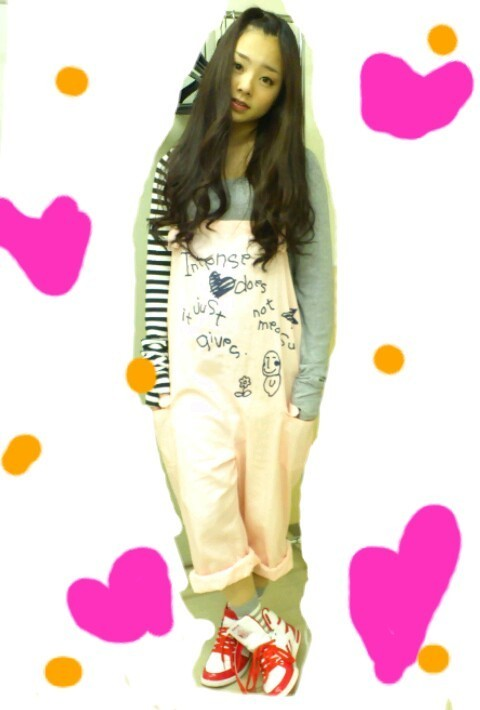

ほいっ♪
ろってぃーです(*^^*)
今日は東京での個別握手会★でした。
寒い中 本当にありがとうございます><
雨の中来てくださったから
髪の毛ビショビショになりながら
来てくれた人も居ました。´_`
何回もループしてくれた人、
応援、アドバイスしてくれた人、
仕事がある中来てくれた人
本当にありがとうございましたっ
(⌒ω⌒)
それに今日はね、
メンバーが
『ろってぃ−♪かわいいω』って
すごい誉めてくれて、
ファンのみなさをんも
すごい誉めてくれた(〃ω〃)
嬉しい気持ちっ(*^^*)
やたらとね
『それ何て書いてるの？』
って聞かれた^^

髪の毛もね、いつもストレートだけど、
巻いてふわふわにしてチョンマゲしてみたの〃ω〃
今日はありがとうございました(*^^*)
みなさんと早く会いたいから
今日来れなかった人も
きてくれた人もまた
会いにきてねっ(〃ω〃)
楽しみにしてるからねω
うし。
↑
(のし。を、うし。って書いてみて笑♪。って今日言われて...^^)
また更新します♪
ありがとうっ))
またねっばいばい(⌒‐⌒)